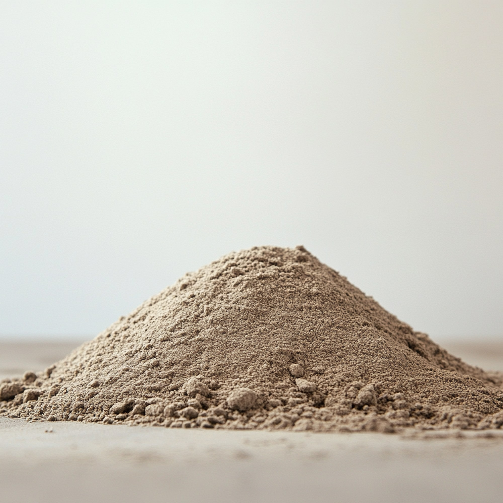
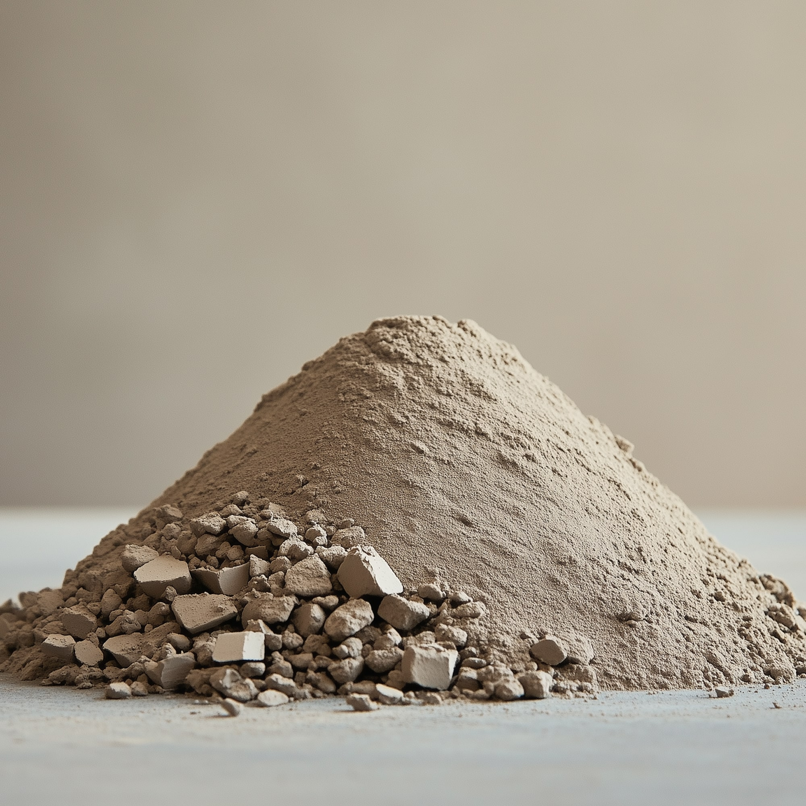
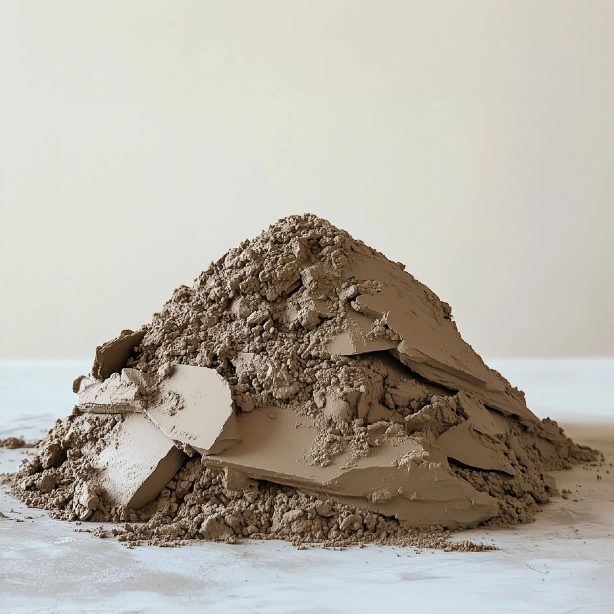
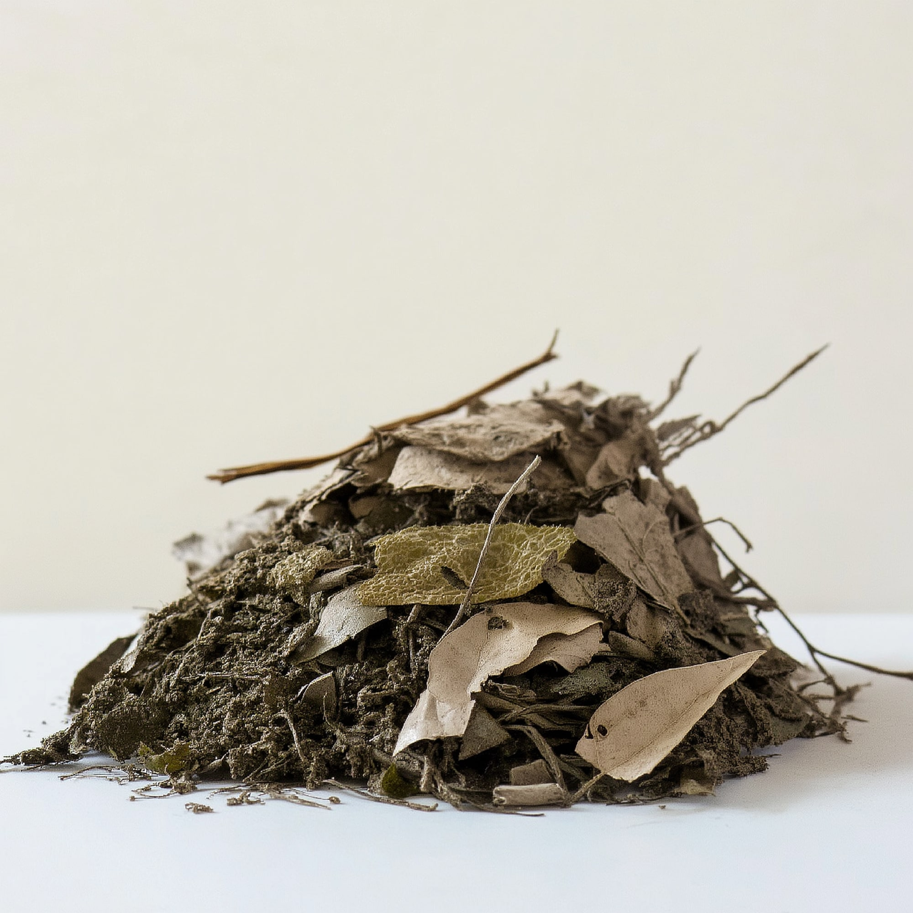

Zand
Geschikt als aanvulling in ophogingen, funderingen en zandige mengsels.
Producten
Door baggerspecie gericht te verwerken, ontstaan herkenbare uitgaande stromen in plaats van één onduidelijke restmassa. Deze pagina zet die stromen los neer.
Producten

Geschikt als aanvulling in ophogingen, funderingen en zandige mengsels.

Een fijnere fractie met waarde voor landschappelijke en civiele toepassingen.

Een stevige stroom die kan bijdragen aan dijkversterking en bodemopbouw.

Restorganica worden apart gehouden voor verdere verwerking of toepassing.
Geselecteerd product
Toepassing
Zand
Voor terreininrichting, aanvulling en civiele lagen waar een zandige stroom gewenst is.
Leem
Wanneer een fijnere fractie helpt om structuur, vochthuishouding of vorm te sturen.
Klei
Geschikt voor projecten waar cohesie, afsluiting en vormvastheid nodig zijn.
Organisch
Organische delen blijven apart, zodat verdere verwerking niet door de rest heen loopt.
Context
herkenbare hoofduitgangen waarop communicatie, opslag en toepassing kunnen worden ingericht.
mobiele keten waarin scheiding en logistiek niet meer van elkaar losstaan.
materiaalwaarde wanneer stromen eerder in het proces hun eigen route krijgen.
Van product naar vraag
De productenpagina staat nu los van services en projecten, zodat je gericht kunt communiceren welke stroom belangrijk is zonder te verdwalen in de rest van de site.
Bespreek een productvraag